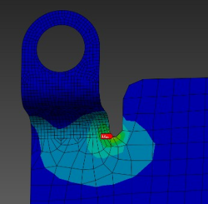
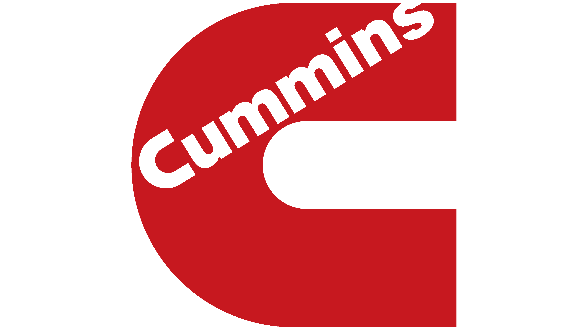
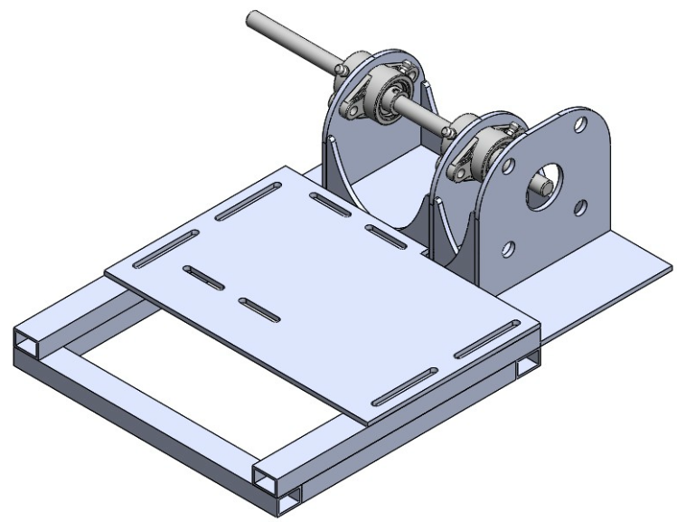

.jpeg)
.jpeg)
Hi, I'm Ali. I design, analyze, and test systems that connect physical theory with functional hardware.
As a BS/MS Mechanical Engineering and Robotics student at Georgia Tech, I apply this approach across industry and research.
At Cummins, I used structural and modal FEA to predict mechanical behavior prior to manufacturing.
At the MIST Lab, I simulated and fabricated MRI-compatible microcatheters.
At Toyota Material Handling, I built an automated electro-hydraulic test rig integrating mechanics, circuitry, and software.
Currently in the CRAB Lab, I design compliant leg mechanisms to analyze robotic locomotion across complex terrain.
Projects







Experience
Designed and built an automated electro-hydraulic test rig that simulates forklift hydraulic back-pressure and system heating within 3% accuracy. Drove the system with custom KiCad circuits and Arduino PWM control, then used nCode and MATLAB analysis to iteratively optimize heat dissipation.
Executed structural, modal, weld, and bolt joint analyses on Watlow Controller and ECM brackets, ensuring resonance-free 10g compliance. Automated batch data processing for 500+ engines with Python, cutting acquisition time by 83%, and assessed a manifold redesign for the QSK60 platform.
Designed a custom engine mounting plate and overhauled a dynamometer testing fixture to evaluate power, torque, and efficiency, supporting eCVT sensor integration that lowered rotational inertia by 60%.